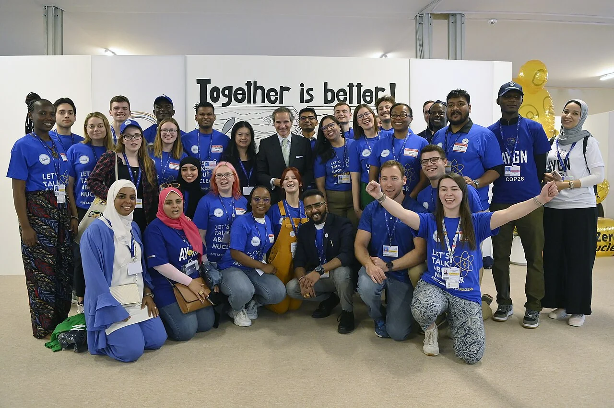
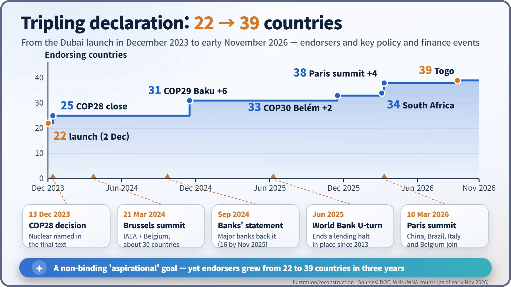
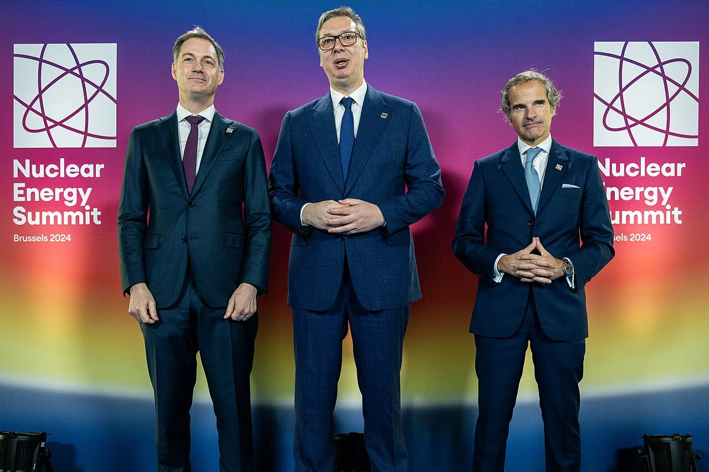
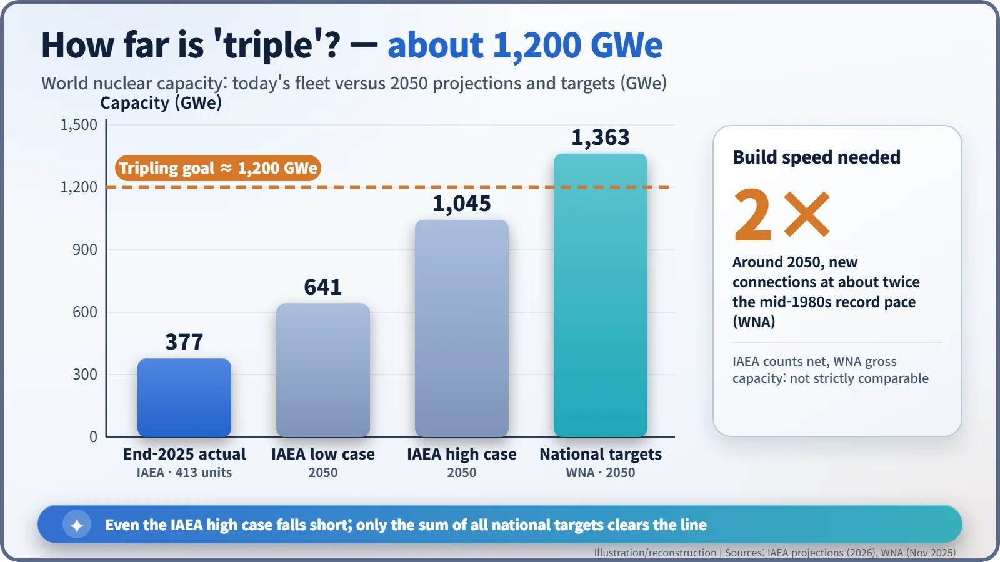

Nuclear History · 294
Triple by 2050? — The COP28 Declaration to Triple Nuclear Energy and Its First Three Years
A one-page, non-binding pledge from Dubai drew 39 countries in three years, put nuclear into a COP decision and helped reopen World Bank lending, yet even optimistic projections fall short of the target.
On 2 December 2023, at the COP28 climate conference in Dubai, 22 countries launched a non-binding declaration to triple global nuclear energy capacity from 2020 levels by 2050. Eleven days later the conference's final decision named nuclear among the low-emission technologies to accelerate. By early November 2026 the declaration had 39 endorsing countries, including China, and the World Bank had lifted its long halt on nuclear lending, but the gap between the goal and the projected build-out remains wide.
One adjective
In diplomacy, a single adjective can carry a lot of weight. The key sentence of the one-page declaration released in Dubai reads: the participants will "work together to advance a global aspirational goal of tripling nuclear energy capacity from 2020 by 2050." Everyone remembers the word "tripling". The word that tells you what kind of document this is, though, is "aspirational". It is a promise without a penalty clause. So what did such a light document actually change? Three years on, there are enough numbers to start answering. [1]
Named at the twenty-eighth attempt
The UN climate conferences, the COPs, began in 1995 and have met almost every year since. For most of that time nuclear power stayed outside the conference hall as an agenda item. That is why COP28, hosted by the United Arab Emirates in 2023, felt symbolic. The host country itself was running the four reactors of the Barakah plant.
On 2 December 2023, 22 countries put their names to the Declaration to Triple Nuclear Energy, among them the United States, France, the United Kingdom, Japan, South Korea, Canada, the UAE, Ghana, Morocco and Mongolia. Jamaica, Armenia and Croatia joined during the conference, so by its close there were 25. Besides the tripling goal, the text invited shareholders of the World Bank and regional development banks to encourage nuclear energy's inclusion in their lending policies. It recognised the value of extending reactor lifetimes "where technically feasible and economically efficient", backed small modular reactors (SMRs, small reactors designed to be built in factories and shipped) and other advanced designs, and called for resilient fuel supply chains. The signatories agreed to review progress every year on the margins of the COP. [1] [3]

One word in the final text
If the declaration was a club of like-minded countries, the decision adopted on 13 December 2023 was the work of nearly 200 Parties. Paragraph 28 of the outcome of the first "global stocktake" under the Paris Agreement lists global efforts that countries are called on to contribute to "in a nationally determined manner". They include tripling renewable energy capacity by 2030, "transitioning away from fossil fuels in energy systems", and, in sub-paragraph (e), "accelerating zero- and low-emission technologies, including, inter alia, renewables, nuclear, abatement and removal technologies such as carbon capture and utilization and storage…". [2]
Commentators described this as the first time a COP decision had named nuclear this explicitly. A few months later, IAEA Director General Rafael Grossi remarked that "it took 28 climate conferences to acknowledge nuclear energy". Still, nuclear appears in that sentence as one technology among several, with no target of its own. [7]

From 22 countries to 39
The list has grown every year. At COP29 in Baku in November 2024, El Salvador, Kazakhstan, Kenya, Kosovo, Nigeria and Türkiye joined, bringing the total to 31. At COP30 in Belém in November 2025, Rwanda and Senegal made it 33. In March 2026 South Africa became the 34th. [3]
The biggest change came on 10 March 2026 at the second Nuclear Energy Summit, in Paris. China, the world's largest builder of new reactors, signed alongside Brazil, Italy and Belgium, taking the total to 38. The first such summit had been held on 21 March 2024 at the Brussels Expo next to the Atomium, co-hosted by the IAEA and Belgium. Leaders and ministers from about 30 countries pledged to "fully unlock" the potential of nuclear energy, while outside Greenpeace activists tried to block delegations from entering. Togo joined in September 2026, so as of early November 2026 the declaration has 39 endorsing countries. India and Russia are still not on the list. [4] [5] [7]

The money door creaks open
Nuclear plants take years to build and cost a lot up front, so finance is the real test. In September 2024 a group of large banks and financial firms issued a statement supporting the tripling goal; by November 2025, 16 institutions had signed. In June 2025 the World Bank's board ended the halt on nuclear lending that had been formal policy since 2013. In an email to staff, President Ajay Banga said the Bank "will begin to re-enter the nuclear energy space", supporting lifetime extensions of existing reactors, grid upgrades and SMRs, in partnership with the IAEA. [3] [8]
The objections are just as clear. In a September 2025 statement with more than 20 partner groups, the German NGO Urgewald opposed nuclear lending by development banks, citing ballooning costs, construction delays, the unresolved problem of radioactive waste and gaps in regulatory and emergency capacity in developing countries. "Today more than ever, 'development' and 'nuclear power' are mutually exclusive," said Urgewald's Merete Looft. [9]
How far is three times?
According to IAEA figures, 413 reactors with a combined net capacity of about 377 GWe were operating at the end of 2025. The World Nuclear Association (WNA) translates the tripling goal into roughly 1,200 GWe. The IAEA's 2050 projections range from 641 GWe in its low case to 1,045 GWe in its high case, so even the high case stops short of the line. The WNA, for its part, calculates that if every government target were met, capacity would reach 1,363 GWe by 2050. Getting there, it adds, would mean connecting new reactors at roughly twice the record pace of the mid-1980s. [6] [10]

Supporters see the declaration as a signal that shifted national policies and lending rules. Critics argue that a non-binding target risks drawing money and time away from renewables and efficiency. Either way, the hard part has only just begun: turning the word "aspirational" into steel and concrete.